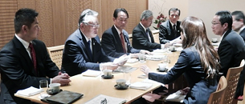
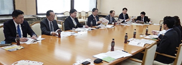
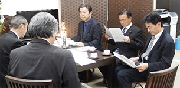
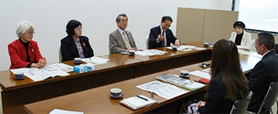

埼玉県議会各会派の皆様と懇談しました
埼玉県生協連は、毎年、県内の生協の活動やくらしの願いを伝える機会として、埼玉県議会の各会派の皆様との懇談会をおこなっています。
懇談では、はじめに岩岡会長理事より｢埼玉県生協連・会員生協の事業状況や組合員数等について｣「SDGsの視点から見た会員生協の活動紹介」｢県政要望として子どもの貧困、フードバンク、協同組合連携｣等を紹介し、その後意見交換しました。
自由民主党議員団役員の皆様との懇談会
- 【日時】
- 2018年12月5日（水）17：30～19：30
- 【場所】
- 浦和ロイヤルパインズホテル5階「四季彩」
- 【出席者】
- 自民党県議団：小島信昭団長、神尾髙善副団長、本木茂幹事長、石井平夫総務会長、田村琢実政調会長 埼玉県生協連：岩岡宏保会長理事、大久保常務理事、大山常務理事、加藤、清水桂
【懇談】（抜粋）

○子どもの貧困について言われるが、なかなか見えてこない。どのように捉えているのか。
→子どもの貧困の定義となる指数がある。しかし、ご質問のようになかなか見えてはこない現状がある。報告で触れた「子どもの未来アクション」などの取り組みを充実させていくことで、地域社会で子どもを支えていく気運を高めていきたいと思っている。
○食の安全については、しっかりと取り組む必要があると思っている。同じように、消費者が食に関する正しい知識を身につけていただくことも大切であると考えている。
立憲・国民・無所属の会議員の皆様との懇談会
- 【日時】
- 2018年12月17日（月）13時00分～13時50分
- 【場所】
- 埼玉県議会
- 【出席者】
- 立憲・国民・無所属の会県議会議員：浅野目義英県議、井上將勝県議、江原久美子県議、木村勇夫県議、高木まり県議、田並尚明県議、水村篤弘県議、山根史子県議、山本正乃県議 埼玉県生協連：岩岡宏保会長理事、大久保常務理事、加藤
【懇談】（抜粋）
○子どもの貧困問題について関心を持って関わっている。生協連としてどのような取り組みをおこなっているのか。
→埼玉県生協連としては、日本生協連のすすめる子どもの未来アクションの取り組みを会員生協と一緒にすすめていきたいと思っている。会員生協では子ども食堂をはじめ、多世代が参加できる場づくりの取り組み、独自に高校生を対象にした給付型奨学金を組合員にサポートを呼びかけおこなっているところもある。
○消費者行政に関する予算が減っていると言うが、具体的に縮小された事業などはあるのか。
→明確に事業縮小などの事例はないが、補助金の仕様が変わるなどの中で、自主財源の確保が難しい事態も出てくる。埼玉県は、先進的に消費生活センターの整備などすすめてきたがこのままでは影響が出てしまう可能性もある。
無所属県民会議議員の皆様との懇談会
- 【日時】
- 2018年12月17日（月）14時00分～15時00分
- 【場所】
- 埼玉県議会
- 【出席者】
- 無所属県民会議 県議会議員：鈴木正人県議、醍醐清県議、岡重雄県議、井上航県議、石川忠義県議、並木正年県議、大嶋和浩県議 埼玉県生協連：岩岡宏保会長理事、大久保常務理事、齊藤常務理事、加藤
【懇談】（抜粋）

○地元で子ども食堂に関わっている。実施する場所を探すのは大変だったが、いまのところは、近隣の農家の皆さんに支えてもらって運営できている。フードバンクとつながりたいと思っている。
○子ども食堂の取り組みが必要な方々に参加いただいているのか、見えない貧困と言われるとおり、わからない。すすめ方で参考になるような事例はあるのか。
→子ども食堂の県内ネットワーク組織とフードバンク埼玉が連携をすすめている現状がある。しかし、全県で一斉にすすめることは難しい。地域の中でのつながり、地産地消的なフードバンクが必要になっていると思う。必要な方に参加いただいているのかと言う点では、学校の校長・教頭と連携をとりながらすすめている事例がある。
○格差社会を変えていくための生協連の考えなどはあるのか
→県内の消費者団体と埼玉県消費者大会を成功させるための話し合いをおこなってきた。その中では、安定した雇用が必要であると確認してきた。また、教育を受ける機会が保障されていることも大切と考える。教育を受けるための支えであるはずの奨学金は、給付型はほとんどなく、奨学金を受けた学生が社会に出たとたんに、多額の借金を背負うようになる現実がある。
○毎年、懇談の時間を持つことができありがたく思っている。SDGsの取り組みをすすめることは必要であり、実践されていることは、すばらしいと思う。
埼玉県議会 無所属改革の会議員の皆様との懇談会
- 【日時】
- 2018年12月17日（月）16時00分～17時00分
- 【場所】
- 埼玉県議会
- 【出席者】
- 無所属改革の会 県議会議員：中川浩県議、木下博信県議、松坂喜浩県議
埼玉県生協連：岩岡宏保会長理事、大久保常務理事、加藤、清水桂
【懇談】（抜粋）

○消費者被害の未然防止については、ぜひ力をお借りしたいと思っている。埼玉県でも広報物を作成し、県民への周知と注意喚起をおこなっているが、なかなか県民には届かない。生協連の皆さんの方が、ノウハウを持っていると思う。また、認知いただく方法として生協の商品案内への折り込みの活用が有効でないかと思っている。
→消費者被害を未然に防止するための周知は、重要であると考える。商品案内への折り込みはハードルが高いが、それぞれの情報紙などで周知することは可能であると考える。埼玉県からの呼びかけがあれば会員生協に呼びかけることはできる。
○子どもの貧困に関する問題をすすめるにあたり、埼玉県として調査などをして現状の見える化をすすめたいと思い、発信をしている。見える化をすすめていくことで、県民が「そうなんだ」と思えるような発信ができ、県民も向き合える状況ができるのではないかと思っている。それと、市町村による地域特性もしっかりと掴むことで、より充実したサポートがおこなえると思っている。
→私たちは今、日本生協連がすすめる「子ども未来アクション」を埼玉県内で広げようとしている。埼玉県行政でも同じように、子どもの貧困の理解を広げるための取り組みをすすめたいと動いていると聞いている。ぜひ改革の会の皆さんには県議会での提案があった場合にはサポートをお願いしたい。私たち生協と県行政が一緒になって、県内各地で地域に密着して取り組みをすすめることで、子ども達へのサポートを充実させることができると考える。
○埼玉県生協連の要請項目を拝見すると、私たちと同じ方向性を向かれていると感じる。一緒にできることがあれば、発信させていただきたい。
日本共産党埼玉県議団議員の皆様との懇談会
- 【日時】
- 2018年12月20日（木）10時00分～11時00分
- 【場所】
- 埼玉県議会
- 【出席者】
- 日本共産党埼玉県議団：柳下礼子県議、村岡正嗣県議、秋山文和県議、金子正江県議、前原かづえ県議 埼玉県生協連：岩岡宏保会長理事、大久保常務理事、加藤
【懇談】（抜粋）

○原発に関する取り組みでは、幅広い団体とともに取り組みをすすめていただいていることに感謝したい。
○消費者行政関連予算に関して、基準財政需要額では270億円ありながら、120億円前後しか使われていないのはどうしてなのか。
→中央省庁では消費者庁ができた際に、消費者行政の重要性が一定、認知された。しかし、自治体では消費者行政の重要性の認識にバラつきがある。首長の考え方で、消費者行政に関わる費用が変わってしまう状況にある。埼玉県は、比較的がんばっていると思う。しかし、先行して消費者行政を充実させ、すべての市町村に消費者生活センターを設置しているため、消費者行政に関わる予算が減っていくことで、維持できなくなる危険性もある。継続した予算措置が必要である。
○消費者被害防止サポーターが大きく前進しているが、サポーターの皆さんが市町村と連携して活動するための環境整備はどのようにしているのか。
→サポーターの養成と一緒に、活躍の場づくりのために市町村に働きかけをおこなっている。
○子どもの貧困の把握は埼玉県ではすすんでいるのか。
→埼玉県行政による把握はすすんでいない。そんな中、日生協がすすめる子どもの未来アクションの取り組みを生協連として、強めていきたいと思っている。埼玉県職員も同プログラムに興味を持っている。埼玉県から提案があれば、一緒になって県内にひろげていきたいと思っている。ぜひ、その時にはサポートをいただきたい。
埼玉県議会公明党議員団の皆様との懇談会
- 【日時】
- 2018年12月21日（金）13時00分～13時30分
- 【場所】
- 埼玉県議会
- 【出席者】
- 埼玉県議会公明党議員団 県議会議員：蒲生徳明県議、萩原一寿県議、石渡豊県議、西山淳次県議、権守幸男県議 埼玉県生協連：岩岡宏保会長理事、大久保常務理事、加藤
【懇談】（抜粋）
○3つの柱をかかげて取り組まれているが、平和や憲法を守るための具体的な取り組みについて、伺いたい。
→生協には様々な考えを持った皆さんが参加している。一方的な考え方を良しとはしない。まず、知るための学習をおこなっている。憲法で言えば、護憲、改憲の論争の前に、そもそも憲法とはなにかについて学習をおこなった。くらしに身近な問題として捉えていただけるようにすることが必要だと考えている。
○2018年2月議会では、私たちもSDGsについて取り上げて質問をおこなった。一緒にぜひSDGsをすすめていきたいと考えている。
○議会で、子ども食堂に関する質問をおこなってきた。ネットワークがすすんできたことを実感している。フードバンクも視察した。しかし、話を聞いてみると食材の確保に苦労している状況が見えてくる。生協連としてどのように関わっているのか。
→フードバンクの運営に関してサポートをおこなっている。フードドライブは各会員生協が日常的に取り組みを開始している。課題は、もっと身近な地域で食糧が流れていく状況を確立することだと思っている。地域の中で、食糧の地産地消的な状況を確立したい。